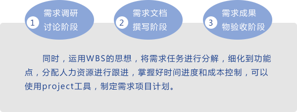
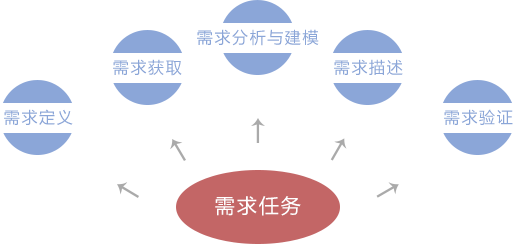
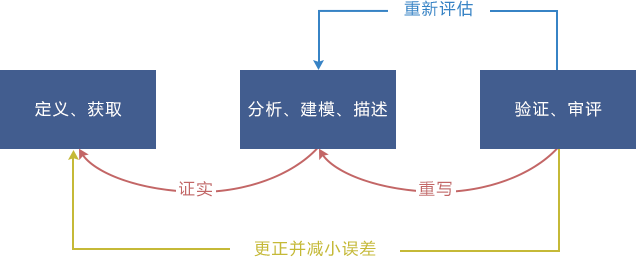
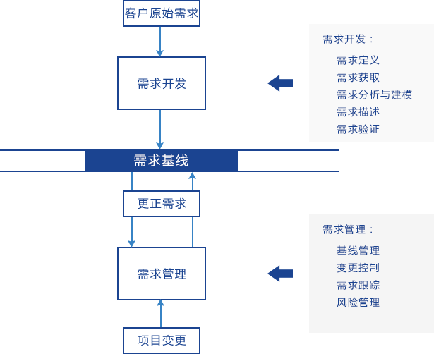

需求管理
服务组织类型：
项目的初始阶段，由于该项目可能涉及多个干系部门，为了明确各部门的职责范围，避免的工作范围的混淆、不明确，更好的开展需求工作，首先需要制定了各个干系部门的职责范围图表，并与所有干系部门进行会议宣导，将整个项目在进行中的各个阶段、各个干系部门工作职责和内容进行明确和划分。目的是在需求分析过程中能够找到对口责任部门，对需求分析过程中发现的业务、技术等问题予以解答，并且能够更有针对性的对功能点内容进行深挖、细化。
不同的企业有不同的升级需求。中科软咨询团队将分析、识别客户的具体需求，从服务内容和交付方式两方面，灵活地为客户组合提供个性化的企业升级系统性解决方案。
干系部门的职责范围图表，横坐标为各个干系部门，纵坐标为整个项目的里程碑阶段，横纵坐标交叉点为该部门在该项目阶段需要完成的任务。
以某项目为例，干系部门的职责范围图表如下：
干系部门职责划分：
需求执行计划制定：

需求任务开发：

需求开发步骤：

需求变更管理：

需求阶段项目估算：
1、自顶向下直接估算法
首先定义整个项目的工作量，然后分解到各个部分。
2、自底向上直接估算法
各个部分的工作量先估算出来，然后进行合成。该方法首先将项目分成一个个子任务，然后估算每个子任务所需的工作量。在大型项目中，分解任务的过程是一个叠代的过程，直到最下面的任务不可分解，产生工作分解结构WBS。
该方法适合于项目规划的后期。如果应用在前期，那么必须对最终的系统作出一些假设，例如对软件模块的数量和大小进行假设，如果项目是全新的或者没有历史数据，建议用该方法。
3、类比估算法
借鉴类似的已完成项目的实际工作量，作为新项目的估算基础。也称为基于案例的推理，估算人员根据以往完成的类似项目（源案例）所消耗的工作量，推算将要开发的软件（目标案例）的工作量。
需提取项目的一些特性作为比较因子，如项目类型（MIS系统、实时系统等）、编程语言、项目规模、开发人员数量、软件开发方法等。
4、专家判断法
征求知识渊博的员工的建议。